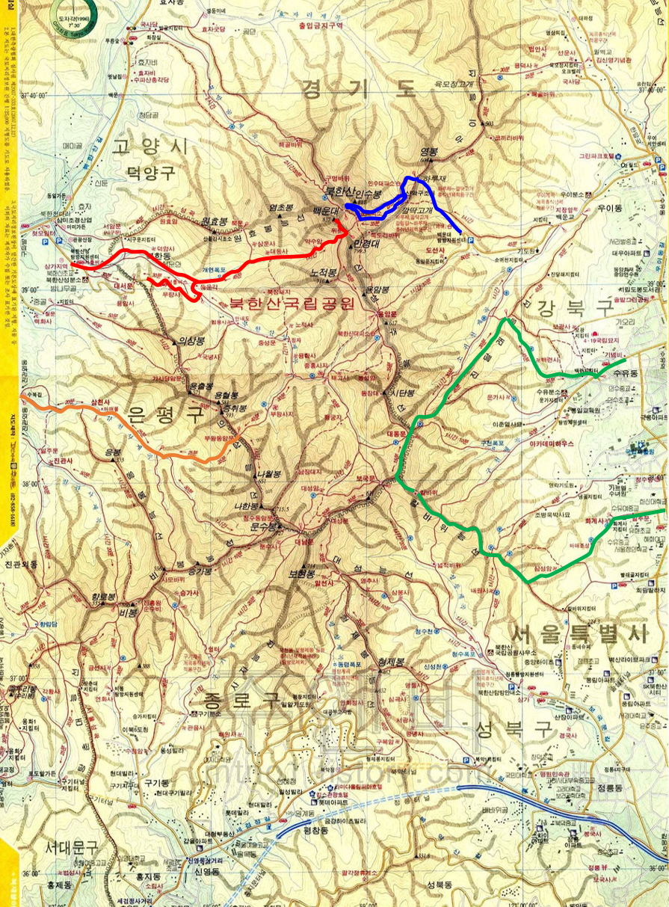

북한산(835.6m)

| 20??년 ??월 03일 |
칼바위 능선?? |
| 2020년 12월 08일 |
불광역, 대호아파트, 족두리봉 (지나침), 향로봉, 비봉 진흥왕순수비, 승가사, 구기계곡 |
| 2020년 11월 13일 |
효자치안센터(버스), 서암문, 원효암, 원효봉, 북문, 효자리계곡, Y자나무 앞 포토포인트, 3679공병부대(버스) |
| 2020년 07월 12일 |
우이동, 하루재, 숨은벽 정상, 백운대피소, 하루재, 우이동 3.65km, 5시간 09분, 고도차: 435m |
| 200?년 여름 |
진관외동, 삼천사, 군인수영장, 부왕동암문, 진관외동 |
| 1999년 07월 31일 |
북한산성 탐방지원센터-위문-백운대-위문-대서문-북한산유원지 |
북한산
ㅁㄴㅇㄻㄴ.......
- 정릉: 최초로 능에 묻힌 비운의 왕비
- 다른 사람 산행기: 비봉 진흥왕 순수비 "http://weekly.cnbnews.com/news/article.html?no=104990"
느낀 점, 배운 것
- 기암절벽. 주의 필요
- 삼각산
- 인수봉
- ...